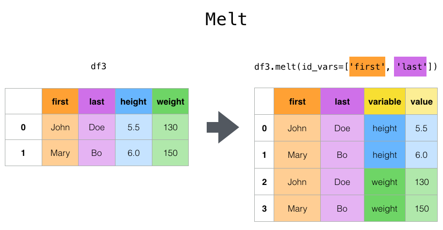
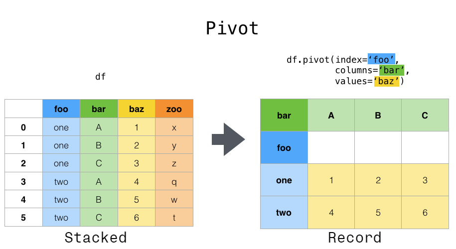
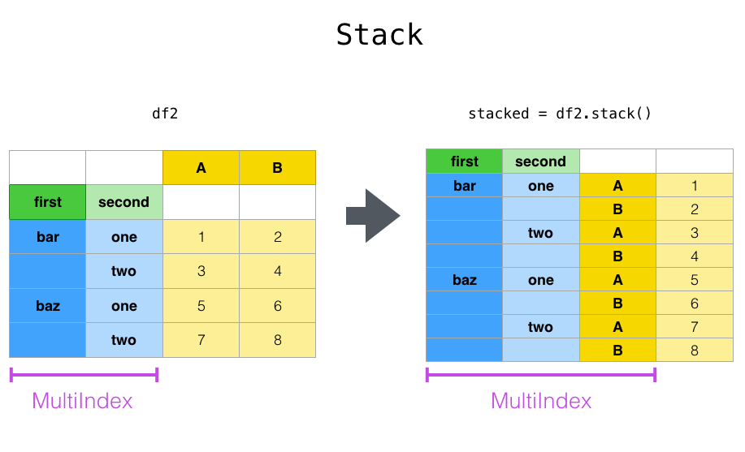
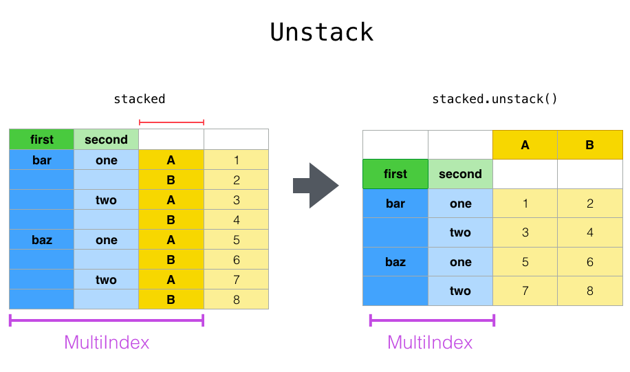
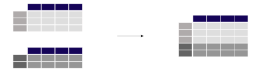
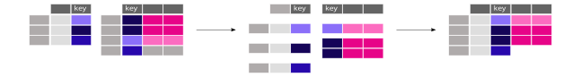

show code
| col0 | col1 | col2 | col3 | col4 | |
|---|---|---|---|---|---|
| row0 | 0 | 0 | 0 | a | alpha |
| row1 | 0 | 0 | 0 | b | gamma |
| row2 | 0 | 0 | 0 | b | gamma |
| row3 | 0 | 0 | 0 | a | gamma |
Data Analytics Foundations
By the end of this module, students will be able to:
| col0 | col1 | col2 | col3 | col4 | |
|---|---|---|---|---|---|
| row0 | 0 | 0 | 0 | a | alpha |
| row1 | 0 | 0 | 0 | b | gamma |
| row2 | 0 | 0 | 0 | b | gamma |
| row3 | 0 | 0 | 0 | a | gamma |
| year | month | day | dep_time | sched_dep_time | dep_delay | ... | dest | air_time | distance | hour | minute | time_hour | |
|---|---|---|---|---|---|---|---|---|---|---|---|---|---|
| 0 | 2013 | 1 | 1 | 517.0 | 515 | 2.0 | ... | IAH | 227.0 | 1400 | 5 | 15 | 2013-01-01T10:00:00Z |
| 1 | 2013 | 1 | 1 | 533.0 | 529 | 4.0 | ... | IAH | 227.0 | 1416 | 5 | 29 | 2013-01-01T10:00:00Z |
| 2 | 2013 | 1 | 1 | 542.0 | 540 | 2.0 | ... | MIA | 160.0 | 1089 | 5 | 40 | 2013-01-01T10:00:00Z |
| 3 | 2013 | 1 | 1 | 544.0 | 545 | -1.0 | ... | BQN | 183.0 | 1576 | 5 | 45 | 2013-01-01T10:00:00Z |
| 4 | 2013 | 1 | 1 | 554.0 | 600 | -6.0 | ... | ATL | 116.0 | 762 | 6 | 0 | 2013-01-01T11:00:00Z |
5 rows × 19 columns
<class 'pandas.core.frame.DataFrame'>
RangeIndex: 336776 entries, 0 to 336775
Data columns (total 19 columns):
# Column Non-Null Count Dtype
--- ------ -------------- -----
0 year 336776 non-null int64
1 month 336776 non-null int64
2 day 336776 non-null int64
3 dep_time 328521 non-null float64
4 sched_dep_time 336776 non-null int64
5 dep_delay 328521 non-null float64
6 arr_time 328063 non-null float64
7 sched_arr_time 336776 non-null int64
8 arr_delay 327346 non-null float64
9 carrier 336776 non-null object
10 flight 336776 non-null int64
11 tailnum 334264 non-null object
12 origin 336776 non-null object
13 dest 336776 non-null object
14 air_time 327346 non-null float64
15 distance 336776 non-null int64
16 hour 336776 non-null int64
17 minute 336776 non-null int64
18 time_hour 336776 non-null object
dtypes: float64(5), int64(9), object(5)
memory usage: 48.8+ MB0 2013-01-01T10:00:00Z
1 2013-01-01T10:00:00Z
2 2013-01-01T10:00:00Z
3 2013-01-01T10:00:00Z
4 2013-01-01T11:00:00Z
Name: time_hour, dtype: object| col0 | col1 | col2 | col3 | col4 | col5 | col6 | |
|---|---|---|---|---|---|---|---|
| a | 0.0 | 1.0 | 2.0 | 3.0 | 4.0 | 5.0 | apple |
| b | 6.0 | 7.0 | 8.0 | 9.0 | 10.0 | 11.0 | orange |
| c | 12.0 | 13.0 | 14.0 | 15.0 | 16.0 | 17.0 | pineapple |
| d | 18.0 | 19.0 | 20.0 | 21.0 | 22.0 | 23.0 | mango |
| e | 24.0 | 25.0 | 26.0 | 27.0 | 28.0 | 29.0 | kiwi |
| f | 30.0 | 31.0 | 32.0 | 33.0 | 34.0 | 35.0 | lemon |
.loc| col0 | col1 | col2 | col3 | col4 | col5 | col6 | |
|---|---|---|---|---|---|---|---|
| a | 0.0 | 1.0 | 2.0 | 3.0 | 4.0 | 5.0 | apple |
| b | 6.0 | 7.0 | 8.0 | 9.0 | 10.0 | 11.0 | orange |
.ilocquery()| col0 | col1 | col2 | col3 | col4 | col5 | col6 | |
|---|---|---|---|---|---|---|---|
| c | 12.0 | 13.0 | 14.0 | 15.0 | 16.0 | 17.0 | pineapple |
| e | 24.0 | 25.0 | 26.0 | 27.0 | 28.0 | 29.0 | kiwi |
| col0 | col1 | col2 | col3 | col4 | col5 | col6 | |
|---|---|---|---|---|---|---|---|
| c | 12.0 | 13.0 | 14.0 | 15.0 | 16.0 | 17.0 | pineapple |
| d | 18.0 | 19.0 | 20.0 | 21.0 | 22.0 | 23.0 | mango |
| e | 24.0 | 25.0 | 26.0 | 27.0 | 28.0 | 29.0 | kiwi |
| f | 30.0 | 31.0 | 32.0 | 33.0 | 34.0 | 35.0 | lemon |
Supported comparisons include >, >=, <, <=, ==, and !=.
| year | month | day | dep_time | sched_dep_time | dep_delay | ... | dest | air_time | distance | hour | minute | time_hour | |
|---|---|---|---|---|---|---|---|---|---|---|---|---|---|
| 0 | 2013 | 1 | 1 | 517.0 | 515 | 2.0 | ... | IAH | 227.0 | 1400 | 5 | 15 | 2013-01-01 10:00:00 |
| 1 | 2013 | 1 | 1 | 533.0 | 529 | 4.0 | ... | IAH | 227.0 | 1416 | 5 | 29 | 2013-01-01 10:00:00 |
| 2 | 2013 | 1 | 1 | 542.0 | 540 | 2.0 | ... | MIA | 160.0 | 1089 | 5 | 40 | 2013-01-01 10:00:00 |
3 rows × 19 columns
| year | month | day | dep_time | sched_dep_time | dep_delay | ... | dest | air_time | distance | hour | minute | time_hour | |
|---|---|---|---|---|---|---|---|---|---|---|---|---|---|
| 7072 | 2013 | 1 | 9 | 641.0 | 900 | 1301.0 | ... | HNL | 640.0 | 4983 | 9 | 0 | 2013-01-09 14:00:00 |
| 235778 | 2013 | 6 | 15 | 1432.0 | 1935 | 1137.0 | ... | CMH | 74.0 | 483 | 19 | 35 | 2013-06-15 23:00:00 |
| 8239 | 2013 | 1 | 10 | 1121.0 | 1635 | 1126.0 | ... | ORD | 111.0 | 719 | 16 | 35 | 2013-01-10 21:00:00 |
3 rows × 19 columns
| year | month | day | dep_time | sched_dep_time | dep_delay | ... | dest | air_time | distance | hour | minute | time_hour | |
|---|---|---|---|---|---|---|---|---|---|---|---|---|---|
| 55985 | 2013 | 11 | 1 | 658.0 | 700 | -2.0 | ... | LAX | 336.0 | 2475 | 7 | 0 | 2013-11-01 11:00:00 |
| 181270 | 2013 | 4 | 18 | 558.0 | 600 | -2.0 | ... | DFW | 234.0 | 1389 | 6 | 0 | 2013-04-18 10:00:00 |
| 256340 | 2013 | 7 | 7 | 1659.0 | 1700 | -1.0 | ... | DCA | 64.0 | 214 | 17 | 0 | 2013-07-07 21:00:00 |
3 rows × 19 columns
| col0 | col1 | col2 | col3 | col4 | col5 | col6 | new_column0 | |
|---|---|---|---|---|---|---|---|---|
| a | 0.0 | 1.0 | 2.0 | 3.0 | 4.0 | 5.0 | apple | 5 |
| b | 6.0 | 7.0 | 8.0 | 9.0 | 10.0 | 11.0 | orange | 5 |
| c | 12.0 | 13.0 | 14.0 | 15.0 | 16.0 | 17.0 | pineapple | 5 |
| col0 | new_column0 | new_column1 | new_column2 | new_column3 | |
|---|---|---|---|---|---|
| a | 0.0 | 0 | 5 | 6 | 0.0 |
| b | 6.0 | 1 | 5 | 6 | 5.0 |
| c | 12.0 | 2 | 5 | 6 | 10.0 |
| d | 18.0 | 3 | 5 | 6 | 15.0 |
| e | 24.0 | 4 | 5 | 6 | 20.0 |
| origin | dest | dep_delay | arr_delay | gain | speed | |
|---|---|---|---|---|---|---|
| 0 | EWR | IAH | 2.0 | 11.0 | -9.0 | 370.044053 |
| 1 | LGA | IAH | 4.0 | 20.0 | -16.0 | 374.273128 |
| 2 | JFK | MIA | 2.0 | 33.0 | -31.0 | 408.375000 |
| 3 | JFK | BQN | -1.0 | -18.0 | 17.0 | 516.721311 |
| 4 | LGA | ATL | -6.0 | -25.0 | 19.0 | 394.137931 |
| col0 | new_column0 | col2 | |
|---|---|---|---|
| a | 0.0 | 0 | 2.0 |
| b | 6.0 | 1 | 8.0 |
| c | 12.0 | 2 | 14.0 |
| d | 18.0 | 3 | 20.0 |
| e | 24.0 | 4 | 26.0 |
Series;DataFrame.| col0 | new_column0 | col2 | |
|---|---|---|---|
| a | 0.0 | 0 | 2.0 |
| b | 6.0 | 1 | 8.0 |
| new_column0 | new_column1 | new_column2 | new_column3 | |
|---|---|---|---|---|
| a | 0 | 5 | 6 | 0.0 |
| b | 1 | 5 | 6 | 5.0 |
| c | 2 | 5 | 6 | 10.0 |
| d | 3 | 5 | 6 | 15.0 |
| e | 4 | 5 | 6 | 20.0 |
Other useful string methods include:
| col0 | col1 | col2 | letters | names | col5 | fruit | new_column0 | new_column1 | new_column2 | new_column3 | |
|---|---|---|---|---|---|---|---|---|---|---|---|
| a | 0.0 | 1.0 | 2.0 | 3.0 | 4.0 | 5.0 | apple | 0 | 5 | 6 | 0.0 |
| b | 6.0 | 7.0 | 8.0 | 9.0 | 10.0 | 11.0 | orange | 1 | 5 | 6 | 5.0 |
| c | 12.0 | 13.0 | 14.0 | 15.0 | 16.0 | 17.0 | pineapple | 2 | 5 | 6 | 10.0 |
| d | 18.0 | 19.0 | 20.0 | 21.0 | 22.0 | 23.0 | mango | 3 | 5 | 6 | 15.0 |
| e | 24.0 | 25.0 | 26.0 | 27.0 | 28.0 | 29.0 | kiwi | 4 | 5 | 6 | 20.0 |
| col5 | col3 | col1 | col4 | col2 | col0 | col6 | |
|---|---|---|---|---|---|---|---|
| a | 5.0 | 3.0 | 1.0 | 4.0 | 2.0 | 0.0 | apple |
| b | 11.0 | 9.0 | 7.0 | 10.0 | 8.0 | 6.0 | orange |
| c | 17.0 | 15.0 | 13.0 | 16.0 | 14.0 | 12.0 | pineapple |
| dep_delay | |
|---|---|
| month | |
| 1 | 10.036665 |
| 2 | 10.816843 |
| 3 | 13.227076 |
| 4 | 13.938038 |
| 5 | 12.986859 |
Common aggregations include:
count, size, first, last, mean, median, min, max, std, var, and sum.
| mean_delay | count_flights | ||
|---|---|---|---|
| month | year | ||
| 1 | 2013 | 10.036665 | 26483 |
| 2 | 2013 | 10.816843 | 23690 |
| 3 | 2013 | 13.227076 | 27973 |
| 4 | 2013 | 13.938038 | 27662 |
| 5 | 2013 | 12.986859 | 28233 |
| month | year | mean_delay | count_flights | |
|---|---|---|---|---|
| 0 | 1 | 2013 | 10.036665 | 26483 |
| 1 | 2 | 2013 | 10.816843 | 23690 |
| 2 | 3 | 2013 | 13.227076 | 27973 |

melt() can help you go from “wider” data to “longer” data.
| first | last | job | height | weight | |
|---|---|---|---|---|---|
| 0 | John | Doe | Nurse | 5.5 | 130 |
| 1 | Mary | Bo | Economist | 6.0 | 150 |

| date | variable | value | |
|---|---|---|---|
| 0 | 2000-01-31 | A | -0.654490 |
| 1 | 2000-02-29 | A | 0.746069 |
| 2 | 2000-03-31 | A | -1.020157 |
| 3 | 2000-04-30 | A | 1.247091 |
| 4 | 2000-05-31 | A | -0.650723 |
| variable | A | B |
|---|---|---|
| date | ||
| 2000-01-31 | -0.654490 | 0.248653 |
| 2000-02-29 | 0.746069 | -0.415679 |
| 2000-03-31 | -1.020157 | -0.397958 |
| 2000-04-30 | 1.247091 | 1.946947 |
| 2000-05-31 | -0.650723 | 0.121012 |
| 2000-06-30 | -1.993619 | 1.769305 |
| 2000-07-31 | -0.027919 | -0.026001 |
| 2000-08-31 | -0.183609 | 1.243879 |
| 2000-09-30 | -0.551679 | 0.586688 |
| 2000-10-31 | -0.535960 | -1.829894 |

| A | B | ||
|---|---|---|---|
| first | second | ||
| bar | one | 2.023960 | 0.705347 |
| two | -1.217726 | -0.544522 | |
| baz | one | 1.625491 | 1.320163 |
| two | -1.126143 | -0.712287 | |
| foo | one | -0.682746 | 1.245968 |



left = pd.DataFrame(
{
"key1": ["K0", "K0", "K1", "K2"],
"key2": ["K0", "K1", "K0", "K1"],
"A": ["A0", "A1", "A2", "A3"],
"B": ["B0", "B1", "B2", "B3"],
}
)
right = pd.DataFrame(
{
"key1": ["K0", "K1", "K1", "K2"],
"key2": ["K0", "K0", "K0", "K0"],
"C": ["C0", "C1", "C2", "C3"],
"D": ["D0", "D1", "D2", "D3"],
}
)
# Right merge
pd.merge(left, right, on=["key1", "key2"], how="right")| key1 | key2 | A | B | C | D | |
|---|---|---|---|---|---|---|
| 0 | K0 | K0 | A0 | B0 | C0 | D0 |
| 1 | K1 | K0 | A2 | B2 | C1 | D1 |
| 2 | K1 | K0 | A2 | B2 | C2 | D2 |
| 3 | K2 | K0 | NaN | NaN | C3 | D3 |
flights, find all flights that:import pandas as pd
url = "https://raw.githubusercontent.com/byuidatascience/data4python4ds/master/data-raw/flights/flights.csv"
flights = pd.read_csv(url)Had an arrival delay of two or more hours
Flew to Houston (“IAH” or “HOU”)
Were operated by United, American, or Delta
Departed in summer (July, August, and September)
Arrived more than two hours late, but didn’t leave late
Were delayed by at least an hour, but made up over 30 minutes in flight
Sort flights to find the flights with longest departure delays.
Sort flights to find the fastest flights
Which flights traveled the farthest?
Using flights
import pandas as pd
url = "https://raw.githubusercontent.com/byuidatascience/data4python4ds/master/data-raw/flights/flights.csv"
flights = pd.read_csv(url)Does it matter what order you used query() and sort_values() in if you’re using both? Why/why not? Think about the results and how much work the functions would have to do.
Compare air_time with arr_time - dep_time. What do you expect to see? What do you see What do you need to do to fix it?
Compare dep_time, sched_dep_time, and dep_delay. How would you expect those three numbers to be related?
Brainstorm as many ways as possible to select dep_time, dep_delay, arr_time, and arr_delay from flights.
What happens if you include the name of a row or column multiple times when trying to select them?
What does the .isin() function do in the following?
Hint: you can use help even on functions that apply to data frames, eg use help(flights.columns.str.contains)
Which carrier has the worst delays? Challenge: can you disentangle the effects of bad airports vs. bad carriers? Why/why not? (Hint: think about flights.groupby([“carrier”, “dest”]).count())
Find the most delayed flight to each destination.
How do delays vary over the course of the day?
Concatenate the follow two data frames:
df1 = pd.DataFrame([['a', 1], ['b', 2]],
columns=['letter', 'number'])
df2 = pd.DataFrame([['c', 3], ['d', 4]],
columns=['letter', 'number'])df1 = pd.DataFrame({'lkey': ['foo', 'bar', 'baz', 'foo'],
'value': [1, 2, 3, 5]})
df2 = pd.DataFrame({'rkey': ['foo', 'bar', 'baz', 'foo'],
'value': [5, 6, 7, 8]})
Data Analytics & Visualization